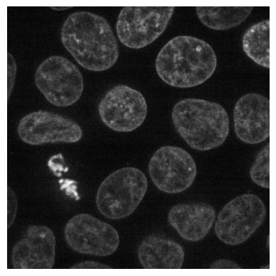
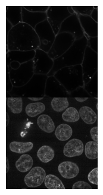
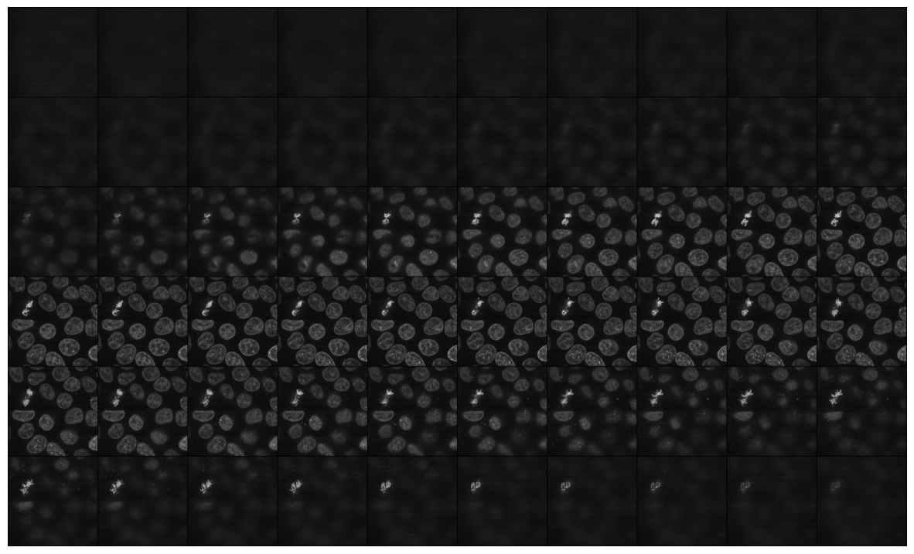
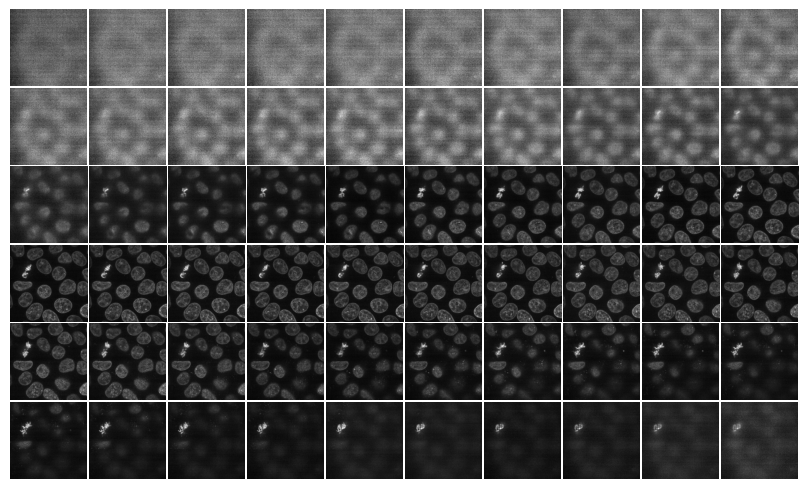
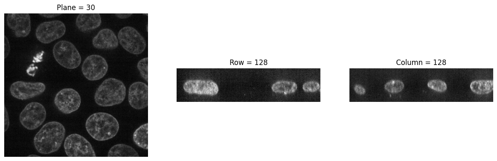
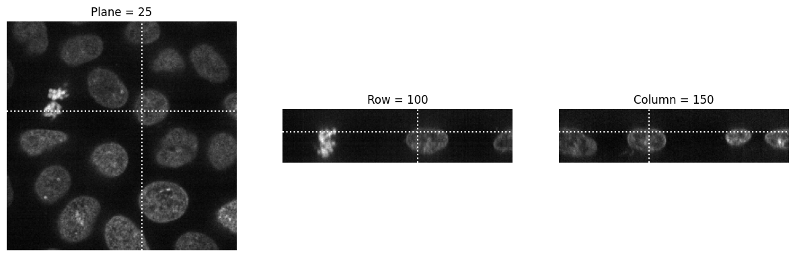

# load sample data
data4D = img2float(cells3d())
data = data4D[:, 1, :, :] # load the nuclei channelVisualize
Data visualization
Display 2D images
Function to quickly display 2D images
plot_image
def plot_image(
values, # A 2D or 3D array of pixel values representing the image.
):
Plot a 2D image or the central slice of a 3D image using Matplotlib. The function assumes that ‘values’ is a 2D or 3D array representing an image, typically in grayscale.
# Example usage:
plot_image(data[30])
plot_image(data)
Display Multichannel images
Function to display RGB and multichannel images
show_multichannel
def show_multichannel(
img, # A tensor or numpy array representing a multi-channel image.
ax:NoneType=None, # The Matplotlib axis to use for plotting.
figsize:NoneType=None, # The size of the figure.
title:NoneType=None, # The title of the image.
max_slices:int=3, # The maximum number of slices to display.
ctx:NoneType=None, # The context to use for plotting.
layout:str='horizontal', # The layout type: 'horizontal', 'square', or 'multirow'.
num_cols:int=3, # The number of columns for the 'multirow' layout. Ignored for other layouts.
cmap:NoneType=None, norm:NoneType=None, aspect:NoneType=None, interpolation:NoneType=None, alpha:NoneType=None,
vmin:NoneType=None, vmax:NoneType=None, colorizer:NoneType=None, origin:NoneType=None, extent:NoneType=None,
interpolation_stage:NoneType=None, filternorm:bool=True, filterrad:float=4.0, resample:NoneType=None,
url:NoneType=None, data:NoneType=None, kwargs:VAR_KEYWORD
):
Show multi-channel CYX image with options for horizontal, square, or multi-row layout.
print(data4D[35].shape)
show_multichannel(data4D[35], cmap='gray', layout='multirow', num_cols=1);(2, 256, 256)
Display 3D images
Function to display 3D images
mosaic_image_3d
def mosaic_image_3d(
t:(<class 'numpy.ndarray'>, <class 'torch.Tensor'>), # 3D image to plot
axis:int=0, # axis to split 3D array to 2D images
figsize:tuple=(15, 15), # size of the figure
cmap:str='gray', # colormap to use
nrow:int=10, # number of images per row
alpha:float=1.0, # transparency of the image
return_grid:bool=False, # return the grid for further processing
add_to_existing:bool=False, # add to existing figure
kwargs:VAR_KEYWORD
):
Plots 2D slices of a 3D image alongside a prior specified axis.
show_images_grid
def show_images_grid(
images, # A list of images to display.
ax:NoneType=None, # The Matplotlib axis to use for plotting.
ncols:int=10, # The number of columns in the grid.
figsize:NoneType=None, # The size of the figure.
title:NoneType=None, # The title of the image.
spacing:float=0.02, # The spacing between subplots.
max_slices:int=3, # The maximum number of slices to display.
ctx:NoneType=None, # The context to use for plotting.
cmap:NoneType=None, norm:NoneType=None, aspect:NoneType=None, interpolation:NoneType=None, alpha:NoneType=None,
vmin:NoneType=None, vmax:NoneType=None, colorizer:NoneType=None, origin:NoneType=None, extent:NoneType=None,
interpolation_stage:NoneType=None, filternorm:bool=True, filterrad:float=4.0, resample:NoneType=None,
url:NoneType=None, data:NoneType=None, kwargs:VAR_KEYWORD
):
Show a list of images arranged in a grid.
Returns: - axes: matplotlib axes containing the grid of images.
mosaic_image_3d(torch_from_numpy(data), figsize=None)
show_images_grid(data, cmap='gray');
Show slices
show_plane
def show_plane(
ax, # The axis object to display the slice on.
plane, # A 2D numpy array representing the slice of the image tensor.
cmap:str='gray', # Colormap to use for displaying the image.
title:NoneType=None, # Title for the plot.
lines:NoneType=None, # A list of indices where dashed lines should be drawn on the plane.
linestyle:str='--', # The style of the dashed lines.
linecolor:str='white', # The color of the dashed lines.
):
Display a slice of the image tensor on a given axis with optional dashed lines.
visualize_slices
def visualize_slices(
data, # A 3D numpy array representing the image tensor.
planes:NoneType=None, # A tuple containing the indices of the planes to visualize.
showlines:bool=True, # Whether to show dashed lines on the planes, rows, and columns.
kwargs:VAR_KEYWORD
):
Visualize slices of a 3D image tensor along its planes, rows, and columns.
visualize_slices(data, showlines=False)
visualize_slices(data, (25,100,150), linestyle=':')
slice_explorer
def slice_explorer(
data, # A 3D numpy array representing the image tensor.
order:str='CZYX', # The order of dimensions in the data.
kwargs:VAR_KEYWORD
):
Visualizes the provided data using Plotly’s interactive imshow function with animation support.
slice_explorer(data4D, order='ZCYX', title='Cells 3D')Unable to display output for mime type(s): application/vnd.plotly.v1+json
plot_volume
def plot_volume(
values, # A 3D array of pixel values representing the volume.
opacity:float=0.1, # Opacity level for the surfaces in the volume plot.
min:float=0.1, # Minimum threshold multiplier for the visualization.
max:float=0.8, # Maximum threshold multiplier for the visualization.
surface_count:int=5, # Number of surfaces to display in the volume plot.
width:int=800, # Width of the plotted figure.
height:int=600, # Height of the plotted figure.
):
Interactive visualization of a 3D volume using Plotly. The function assumes that ‘values’ is a 3D array representing the volume data.
plot_volume(data[:, 50:150, 50:150])Unable to display output for mime type(s): application/vnd.plotly.v1+json
Histogram
plot_intensity_histogram
def plot_intensity_histogram(
image, threshold:NoneType=None, mode:NoneType=None, # None, "greater", "lower"
bins:int=256, per_channel:bool=False, density:bool=False, int_ticks:bool=True, int_y_ticks:bool=False
):
Plot intensity histogram of an image.